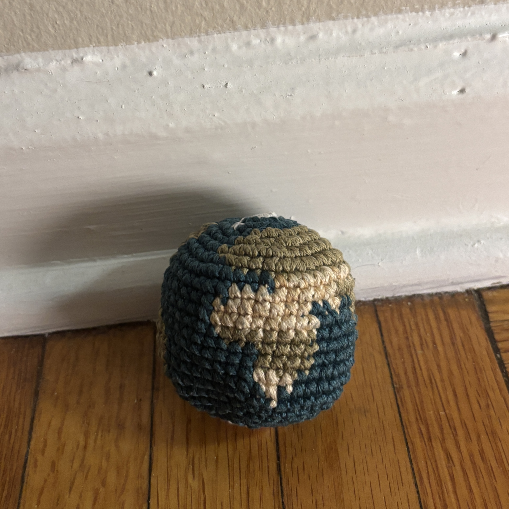
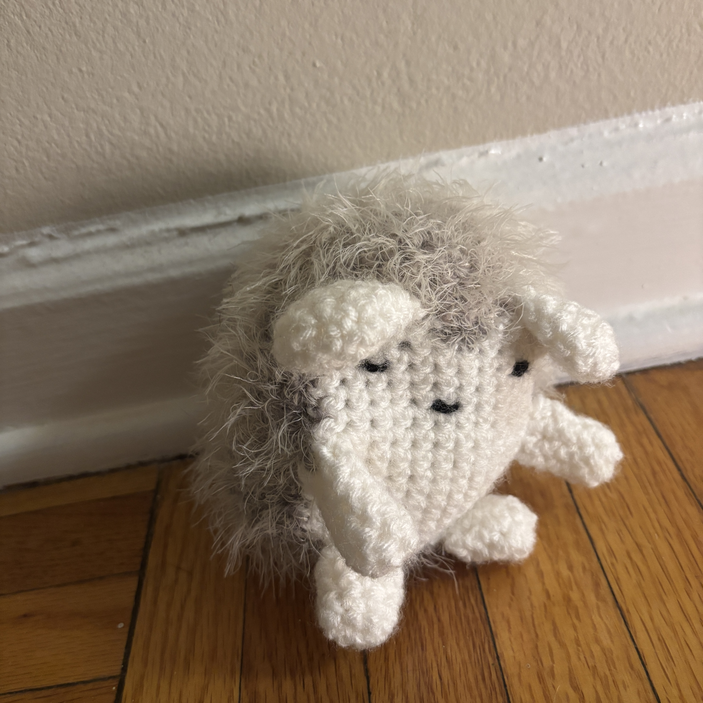
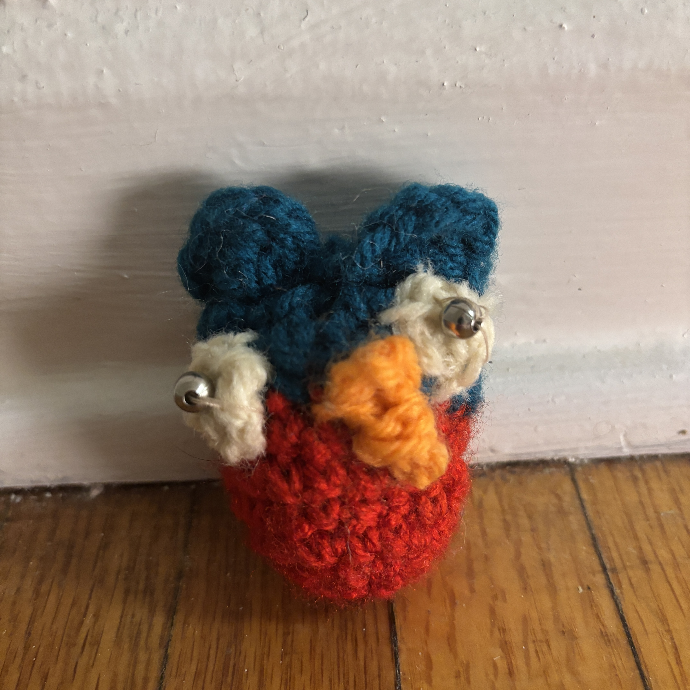
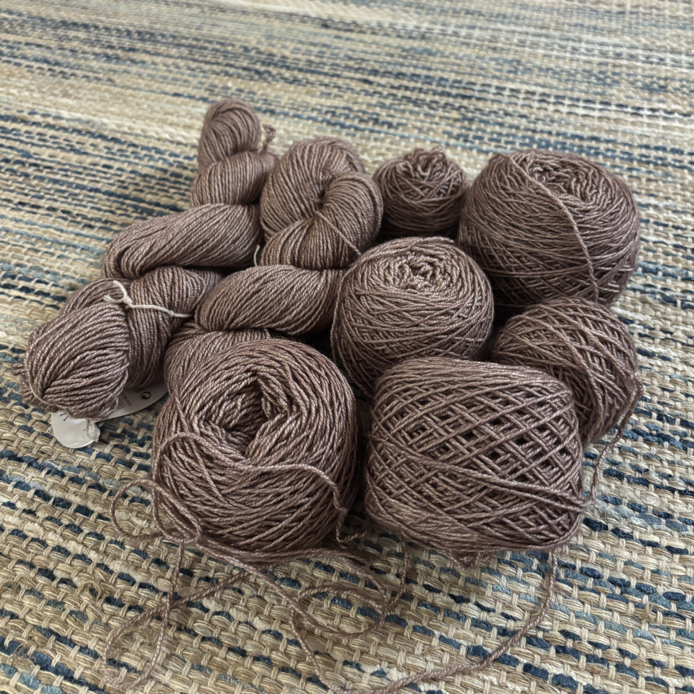

My most recently finished project is the globe hackysack (lava) from Project Hail Mary. This was jsut really fun to make, and I am pleased with how it turned out!

This is Gizmo the Hedgehog.

This is one of the very first things I made (I think I was ten). I believe it is most likely an owl.

I first started this sweater literally in March. I got like 3/4 of the way through and then undid it all because I decided I didn't like how the collar sat :(